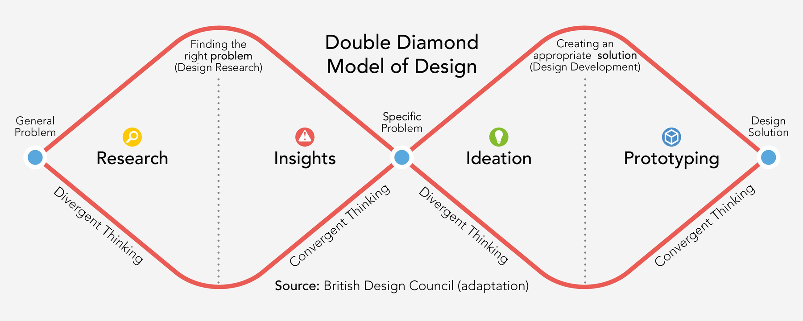

D 492 Intro to Design Research
Design Research
Methods
A working reference of 117 methods used to plan research, make sense of what it finds, generate ideas, and test them. The detailed cards were researched and written by students in this course.
Framework
The Double Diamond
The Double Diamond, published by the UK Design Council in 2005, describes design as two cycles of opening up and narrowing down. The first diamond works on the problem: research widens what the team knows, then insight work converges on a clear definition of what is actually wrong. The second diamond works on the solution: ideation opens the field of possible responses, then prototyping and testing narrow it to something that holds up in use. Every method in this collection is filed under the moment in that sequence where it does its work.

Discover
Gather evidence about people, contexts, and the conditions a design has to work in.
Define
Interpret what the research found and settle on the problem worth solving.
Develop
Generate a wide field of possible responses before committing to any one.
Deliver
Make ideas tangible and find out what survives contact with real use.
Research methods
Gathering evidence about people, contexts, and existing conditions through direct and indirect inquiry.
Insights methods
Organizing and interpreting what research found, so a team can agree on the real problem.
Ideation methods
Generating and exploring many possible directions before narrowing to one.
Prototyping and testing methods
Making ideas tangible and evaluating them through simulation, expert review, and user feedback.
Further reading
Additional resources
The books, toolkits, and reference sites that this collection draws on. Library links require an NC State login.
Books via University Libraries
Toolkits
- IDEO.org, The Field Guide to Human-Centered Design
- d.school, Design Thinking Bootleg
- SAP, Innovation Toolkit
- LUMA Institute, Innovating for People
- Oblo, Service Design Tools
- PolyU, Design Research Methods
- Red Hat, Open Practice Library
- DBIR, Co-Design Tools
- Digital.gov, Human-Centered Design Guide Series
- 18F, Methods
- verrocchio Institute, Innovation Wiki
Other resources
- The Double Diamond, Design Council
- The Encyclopedia of Human-Computer Interaction
- Nielsen Norman Group, When to Use Which User-Experience Research Methods
- Nielsen Norman Group, UX Research Methods Glossary
- Nielsen Norman Group articles
- Center for Health Design, About Evidence-Based Design
- Usability.gov
Credits
Who wrote these cards
Each student in D 492 was assigned two methods from different phases of the design process, researched them against published sources, and wrote the card you see here. Each student also chose the image shown with their cards, and the credit under every image names the student and the original source. Select a method to read their work.